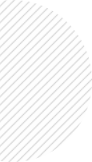
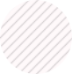
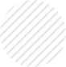
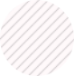
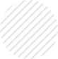

 
  
 
Wonder Geo Mapping consultancy and services
A digital elevation model (DEM) is required to create an accurate orthophoto as distortions in the image due to the varying distance between the camera/sensor and different points on the ground need to be corrected.
We are specialized in photogrammetry as well as Lidar & Gis. Professionals at Wonder geo mapping are highly experienced and understand the need of providing exceptional client services which results in significant growth of our company.
Wonder geo mapping consultancy and services is a leading Photogrammetry service provider to worldwide. Photogrammetry Services provide high resolution data deliverables at cost effective prices to its clients across the world. we are experts in highly effective customized process for Photogrammetry data processing and mapping which enables us to deliver accurate, detailed and reliable information faster. For more information on our Photogrammetry services kindly contact our Head Office, Wonder geo mapping consultancy and services.